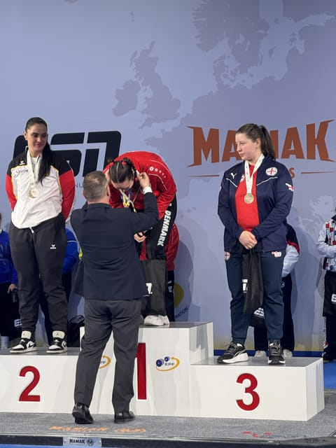

Resultater
Et dokumenteret atletforløb med nationale rekorder og internationale stævner. Øvrige resultater fra Entropi-atleter står separat nedenunder.
Atletprofil
Regitze har løftet sin total fra 465 kg ved SM i 2024 til 547,5 kg ved EM i marts 2026. Ved EM blev hun nummer fem samlet, vandt guld i dødløft og satte danske seniorrekorder i squat, dødløft og total.

190 kg squat, 102,5 kg bænkpres og 230 kg dødløft. Dansk mester otte dage efter VM.
187,5 kg squat, 102,5 kg bænkpres og 230 kg dødløft ved VM i Litauen.
EM-guld i dødløft med 240 kg. Danske seniorrekorder i squat med 195 kg, dødløft med 240 kg og total med 547,5 kg.
193 kg squat, 110 kg bænkpres og 230,5 kg dødløft. Et tydeligt skridt fra 2024-sæsonen mod EM-resultatet.
190 kg squat, 100 kg bænkpres og 225 kg dødløft.
172,5 kg squat, 97,5 kg bænkpres og 195 kg dødløft. Udgangspunktet for den viste udvikling.
Dansk mester og rekordholder under Entropi Coaching.
Sølv ved SM i bænkpres under Entropi Coaching.
DM-guld i bænkpres under Entropi Coaching.